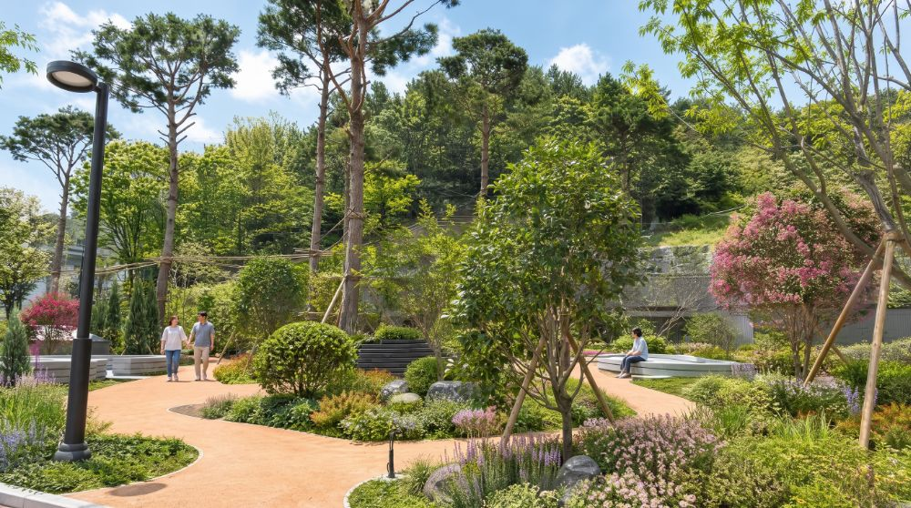

ROUTE.3240m
숲의 고요함을 따라 걷는 치유의 길
F포레스트 코스|FOREST COURSE

Description
깊은 숲에서 생명의 숨결이 시작됩니다.
포레스트 코스는 포레힐링가든과 마운딩그라운드, 포레어드벤처를 잇는 240m의 숲길로, 숲의 고요함을 온전히 느끼게 하는 치유의 산책로입니다.
소나무 군식과 코르크 포장 보행로가 어우러지고, 감탕나무와 다정큼나무의 다층 식재가 사계절 안정적인 녹음을 이룹니다.
천천히 걷고, 깊이 쉬어 가는 숲의 여정입니다.